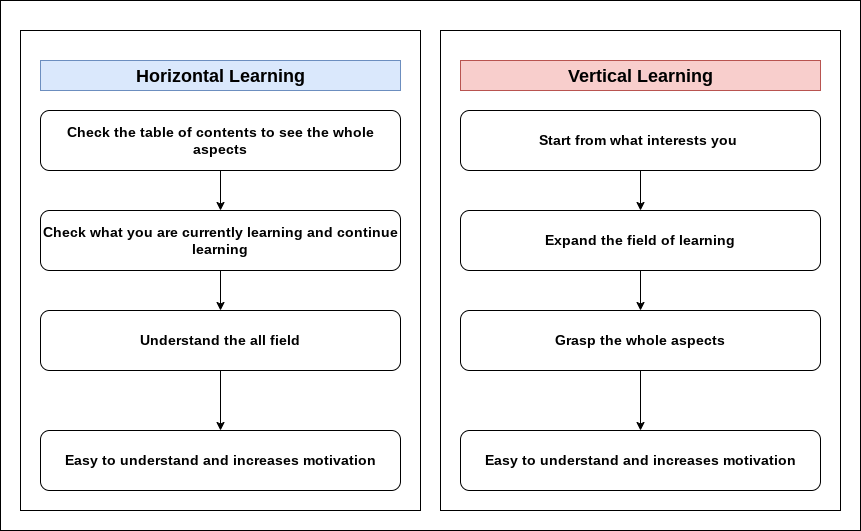

Principles of Learning Methods
1. Are You a "Multi-tasker" or a "Single-tasker?"
First, please consider the following question:
Based on the definitions below, which of the following best describes you?
Multi-tasker
- Recognizes broadly but shallowly
- Naturally curious about various things
- Good at simultaneous processing and managing multiple tasks at once
- Struggles with concentrating deeply on one thing (due to a tendency to be easily distracted)
Single-tasker
- Focuses narrowly and deeply
- Good at think deeply about one thing
- Not suited for multitasking or managing multiple tasks simultaneously
In terms of learning, multi-taskers are better suited for "Horizontal Learning," which involves learning about a topic broadly and shallowly. Conversely, single-taskers are better suited for "Vertical Learning," which involves delving deeply into one specific area of study.
2. What Are "Horizontal Learning" and "Vertical Learning"?
Next, let's explore the purpose, characteristics, and process of each learning method.
Horizontal Learning
-
Purpose: To understand the overall aspects and relationships within a topic.
-
Features: Multi-taskers have a natural affinity for this method, but they may become overwhelmed by the volume of information. Therefore, it’s essential to organize the information into diagrams and visualize the structure. As your knowledge expands, you’re likely to discover areas of deeper interest.
Vertical Learning
-
Purpose: To narrow down a field and explore it in depth.
-
Features: Single-taskers naturally excel at this method, but it's not ideal for progressing linearly through material. It’s crucial to focus on quality over quantity and start learning in areas that genuinely interest you. This approach also underpins the development of academic expertise.
Flow: The processes of both learning methods are illustrated in the flowchart below ↓.

3. So, What Should You Do?
As mentioned earlier, if you identify as a multi-tasker, you should focus on horizontal learning, whereas if you identify as a single-tasker, you should focus on vertical learning. Below is a summary of the approaches tailored to each type.
Multi-tasker Apporoach
Steps:
1. Review the full table of contents.
2. Continuously track your learning progress.
3. Complete the table of contents step by step.
4. If you find a topic that interests you,
explore it in greater depth (even if the scope is narrow).
5. This will naturally lead to deeper thinking.
Single-tasker Apporoach
Steps:
1. Delve deeply into the field that currently interests you.
2. If your interests expand, follow that direction.
3. If you need to study a subject that doesn't interest you,
narrow your focus to key areas.
- The key to narrowing your focus is to prioritize the most important
aspects-those that are essential for understanding the subject.
4. You'll naturally find that other, less critical problems are resolved as well.
If the learning method corresponding to your tasking type doesn't work for you,
consider trying the opposite approach.
Additionally, it can be beneficial to switch learning methods depending on the situation,
regardless of your tasking type.
Overall, I hope this guide enhances the quality of your learning.
Please refer to it in your future studies.